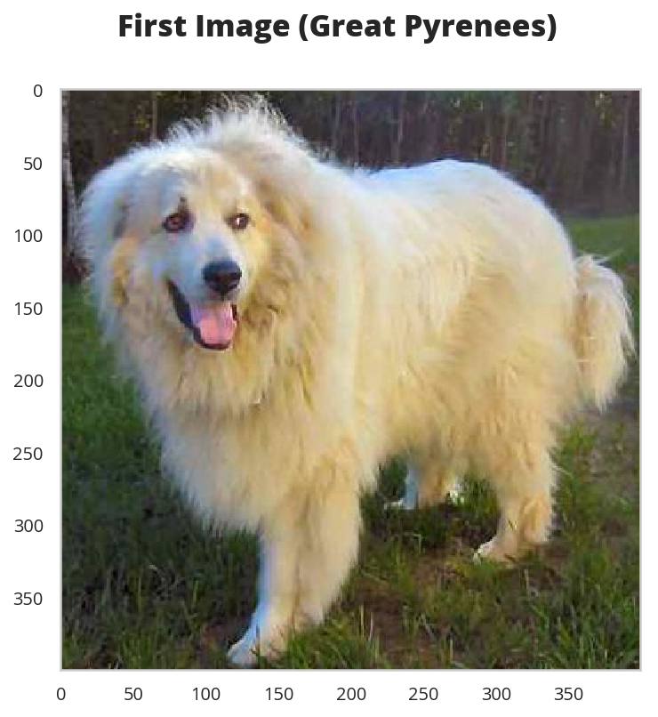

Custom Data Loader
Table of Contents
Set Up
Imports
Python
from pathlib import Path
import random
PyPi
from dotenv import load_dotenv
from torchvision import transforms, datasets
import matplotlib.pyplot as pyplot
import numpy
import seaborn
import torch
import torchvision.transforms as transforms
This Project
from neurotic.tangles.data_paths import DataPathTwo
Plotting
get_ipython().run_line_magic('matplotlib', 'inline')
get_ipython().run_line_magic('config', "InlineBackend.figure_format = 'retina'")
seaborn.set(style="whitegrid",
rc={"axes.grid": False,
"xtick.labelsize": 10,
"ytick.labelsize": 10,
"font.size": 14,
"font.family": ["sans-serif"],
"font.sans-serif": ["Open Sans", "Latin Modern Sans", "Lato"],
"figure.figsize": (8, 6)},
font_scale=3)
The Data Set
load_dotenv()
train_path = DataPathTwo(folder_key="DOG_TRAIN")
print(train_path.folder)
assert train_path.folder.is_dir()
/home/hades/datasets/dog-breed-classification/dogImages/train
The Breeds
folders = [directory.name for directory in train_path.folder.iterdir()]
print(folders[:5])
['024.Bichon_frise', '022.Belgian_tervuren', '100.Lowchen', '028.Bluetick_coonhound', '128.Smooth_fox_terrier']
The folder-name structure appears to be <index>.<breed>. One thing to note is that it isn't ordered by the leading index.
breeds = [folder.split(".")[-1] for folder in sorted(folders)]
print(breeds[:5])
['Affenpinscher', 'Afghan_hound', 'Airedale_terrier', 'Akita', 'Alaskan_malamute']
The Files
bichon_folder = train_path.folder.joinpath(folders[0])
bichon_files = [image.name for image in bichon_folder.glob("*")]
print(bichon_files[:5])
['Bichon_frise_01735.jpg', 'Bichon_frise_01701.jpg', 'Bichon_frise_01697.jpg', 'Bichon_frise_01771.jpg', 'Bichon_frise_01716.jpg']
So the file structure appears to be <breed>_<index>.jpg. I checked by hand (ls -R train/ | grep "jpg" | wc -l) and there are 6,680 images in the training set.
training = sorted(list(train_path.folder.glob("*/*")))
print(training[:5])
print(len(training))
assert len(training) == 6680
[PosixPath('/home/hades/datasets/dog-breed-classification/dogImages/train/001.Affenpinscher/Affenpinscher_00001.jpg'), PosixPath('/home/hades/datasets/dog-breed-classification/dogImages/train/001.Affenpinscher/Affenpinscher_00002.jpg'), PosixPath('/home/hades/datasets/dog-breed-classification/dogImages/train/001.Affenpinscher/Affenpinscher_00004.jpg'), PosixPath('/home/hades/datasets/dog-breed-classification/dogImages/train/001.Affenpinscher/Affenpinscher_00005.jpg'), PosixPath('/home/hades/datasets/dog-breed-classification/dogImages/train/001.Affenpinscher/Affenpinscher_00006.jpg')]
6680
In this case I don't think we need the paths to be sorted, since we're going to look them up by index, but why not?
So, training holds the paths to all the training images. We need a way to look up the images and labels by index.
names = ["_".join(path.name.split("_")[:-1]) for path in training]
print(random.sample(names, 5))
['Pharaoh_hound', 'Irish_water_spaniel', 'Xoloitzcuintli', 'Border_collie', 'Lakeland_terrier']
So we have the path to each training file and the breed for each, now we need a list of indices to look it up. Now that I think about it, there really wasn't a reason for making the breeds from the folders… maybe I'll make a pretty-name lookup from them instead.
indices = list(range(len(names)))
print(len(indices))
6680
Now the name lookup.
breed_map = {breed: " ".join(breed.split("_")).title() for breed in breeds}
for breed in random.sample(breeds, 5):
print("{}: {}".format(breed, breed_map[breed]))
American_eskimo_dog: American Eskimo Dog Bull_terrier: Bull Terrier Boxer: Boxer Xoloitzcuintli: Xoloitzcuintli Bullmastiff: Bullmastiff
Put It All Together
I'll make a class to build it up.
class DogFiles:
"""Builds up the lists for the data-files
Args:
path: path to the top (train, test, validate) folder
glob: glob to grab the files in the path
"""
def __init__(self, path: Path, glob: str="*/*") -> None:
self.path = path
self.glob = glob
self._breeds = None
self._breeds_labels = None
self._file_breeds = None
self._file_labels = None
self._paths = None
return
@property
def breeds(self) -> list:
"""Breed names"""
if self._breeds is None:
folders = [directory.name for directory in train_path.folder.iterdir()]
self._breeds = [self.format_breed(folder.split(".")[-1])
for folder in sorted(folders)]
return self._breeds
@property
def breeds_labels(self) -> dict:
"""maps the breed name to an index for the breed"""
if self._breeds_labels is None:
self._breeds_labels = {
name: label for label, name in enumerate(self.breeds)}
return self._breeds_labels
@property
def file_breeds(self) -> list:
"""Breed for each file"""
if self._file_breeds is None:
self._file_breeds = [self.format_breed("_".join(path.name.split("_")[:-1]))
for path in self.paths]
return self._file_breeds
@property
def file_labels(self) -> list:
"""Breed-labels for each file"""
if self._file_labels is None:
self._file_labels = [self.breeds_labels[breed]
for breed in self.file_breeds]
return self._file_labels
@property
def paths(self) -> list:
"""Paths to files
Assumes there is a list of folders in the path and we want all their files
"""
if self._paths is None:
self._paths = sorted(list(self.path.glob(self.glob)))
return self._paths
def format_breed(self, token: str) -> str:
"""remove underscore and caps-case
Args:
token: the breed-name portion of the file or folder
"""
return " ".join(token.split("_")).title()
filer = DogFiles(train_path.folder)
assert len(filer.breeds) == 133
assert len(filer.paths) == 6680
index = random.randrange(len(filer.paths))
print(index)
print(filer.paths[index])
label = filer.file_labels[index]
print(label)
print(filer.breeds[label])
print(filer.file_breeds[index])
assert filer.file_breeds[index] == filer.breeds[label]
2704 /home/hades/datasets/dog-breed-classification/dogImages/train/047.Chesapeake_bay_retriever/Chesapeake_bay_retriever_03378.jpg 46 Chesapeake Bay Retriever Chesapeake Bay Retriever
Double-Check the Labels
load_dotenv()
transform = transforms.ToTensor()
path = DataPathTwo(folder_key="MNIST")
train_data = datasets.MNIST(root=path.folder, train=True,
download=True, transform=transform)
train_loader = torch.utils.data.DataLoader(train_data,
batch_size=1,
num_workers=0)
dataiter = iter(train_loader)
images, labels = dataiter.next()
print(labels)
tensor([5])
So, when actually building the data-loader I'd have to return a tensor - or does the dataloader do that?
Once Again With Pytorch
According to the data loading tutorial I don't actually have to do this - I thought I did because they bury how to actually do it for images at the bottom of the page, but it says that as long as the folders group the images by classification it will automatically create the labels for them and load the images…
transformer = transforms.ToTensor()
training = datasets.ImageFolder(root=train_path.folder, transform=transformer)
batches = torch.utils.data.DataLoader(training, batch_size=1, shuffle=True, num_workers=0)
images, labels = iter(batches).next()
images = images.numpy()
image = images[0]
figure, axe = pyplot.subplots()
figure.suptitle("First Image ({})".format(filer.breeds[labels.item()]), weight="bold")
axe_image = axe.imshow(numpy.transpose(image, (1, 2, 0)))

So it looks like that's all that I really needed…